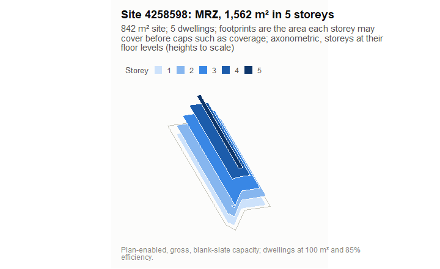
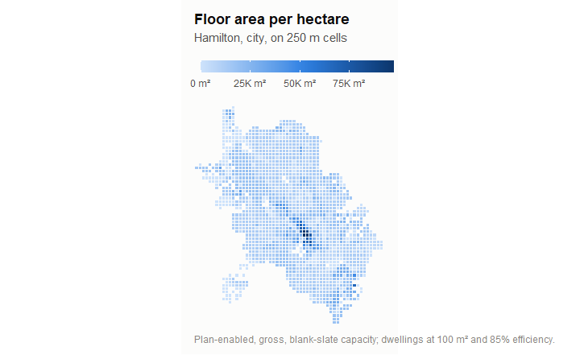

This vignette adds a real jurisdiction from nothing: Hamilton, New Zealand. It follows the route a planner or analyst would take with a plan they have not modelled before: read the plan, enter its rules in the Excel template, prepare the parcels and the zoning, run capacity, check it, and ask a question of it. The walkthrough was first done on 23 November 2026 for one area and five zones; the rulebook was then built out to the whole plan (25 November 2026), and the last section runs it over the whole city.
1. Read the plan
Hamilton’s rules are in the Hamilton City Operative District Plan, read in its online ePlan at the revision of 13 November 2026. Plan Change 12 (Enabling Housing Supply), Hamilton’s response to the National Policy Statement on Urban Development, was made operative on 20 December 2024 and is part of that text. The walkthrough starts with the zones of one area, Claudelands and Hamilton East: General, Medium Density and High Density Residential (Chapter 4), and the Business 6 (neighbourhood centre) and Business 2 zones (Chapter 6). The finished rulebook adds the rest in three stages:
- residential: Large Lot Residential, Peacocke’s Medium Density zone (Chapter 4A), the residential precincts, the Three Waters Infrastructure Capacity Overlay’s density, the riverbank and gully hazard setback and the 5 m setback from arterial roads;
- centres and business: Business 1 to 7, the Peacocke centres, the Central City precincts, the Knowledge, Industrial, Ruakura and Te Rapa North zones;
- overlays: built heritage, Historic Heritage Areas, Significant Natural Areas, and the High Flood Hazard Area of Plan Change 14 (Flooding).
For each zone, the rules that shape a building or count its dwellings
were written down with their rule numbers (the notes are in
data-raw/hamilton/rules_notes.md in the package source). In
summary:
| General Residential | Medium Density Residential | High Density Residential | Business 6 | |
|---|---|---|---|---|
| Height | 10 m (4.2.5.4) | 18 m, 5 storeys (4.3.4.4) | 26 m (4.4.5.4) | 11 m next to General Residential, 18 m next to Medium Density (6.4.1) |
| Recession plane | 45° from 4 m, not to a road (4.2.5.5) | one or two units: 60° from 4 m, 45° to General Residential; three or more attached units: no plane on side boundaries within 20 m of the road, 60° from 6 m beyond (4.3.4.5) | only to other zones: 45° to General Residential, 60° from 6 m to Medium Density beyond 20 m (4.4.5.5) | 45° from 4 m to General Residential, 60° to Medium Density (6.4.2) |
| Setbacks | road 1.5 m, side and rear 1.5 m (4.2.5.6) | road 1.5 m, side and rear 1 m (4.3.4.6) | 1 m; parts over 11 m 4 m back (4.4.5.6, 4.4.5.14) | 0 m front; 1.5 m to a residential zone (6.4.3) |
| Coverage | 45% (4.2.5.2) | 50% (4.3.4.2) | 60% (4.4.5.2) | floor area ratio 2:1 or 3:1 (6.4.4) |
| Landscaping | 20% (4.2.5.3) | 20% (4.3.4.3) | 10% (4.4.5.3) | none at ground floor dwellings: none allowed (6.4.7) |
| Dwellings | two per site permitted, more restricted discretionary (4.2.3.1) | three per site permitted, more restricted discretionary (4.3.3.1) | three or more restricted discretionary (4.4.3.1) | above ground floor only (6.3, 6.4.7) |
Some rules need more than zoning. The 5 m setback from arterial roads
needs the road hierarchy: the council’s road centre lines carry a class,
and the rulebook names the column
(morphology: road_class_field), so each road boundary is
tagged with the class of the road in front and a setback can name
minor_arterial_road. The density rule applies only inside
an infrastructure overlay, and the hazard setback only near a gully:
both are overlays with their own layers. Rules that cannot be applied
are not dropped: they go in the rulebook’s register of rules not
modelled, with the direction each would move capacity.
Two choices in the full rulebook are assumptions, not rules, and the rulebook says so: the Central City has no maximum height, so 32 m (above which new buildings take added design matters) is used; and industrial zones use a 7 m storey rather than the 3 m default. Plan Change 14 (Flooding) was decided on 24 December 2025 and is under appeal; its High Flood Hazard Area is applied as though in force, marked as proposed.
2. Enter the rules in the template
rulebook_template() writes an empty workbook with one
sheet per kind of rule and a fields sheet explaining every
column. The rules above were typed into it, a row per zone, a row per
setback, each with its citation:
f <- system.file("extdata", "hamilton_rulebook.xlsx", package = "plancap")
if (!nzchar(f)) f <- "../inst/extdata/hamilton_rulebook.xlsx"
z <- openxlsx2::read_xlsx(f, sheet = "zones")
z[z$method != "none", c("zone", "codes", "height", "storeys", "coverage_max", "landscaping_min", "far_max", "height_source")]
#> zone codes height storeys coverage_max
#> 2 GRZ General Residential 10 NA 0.45
#> 3 MRZ Medium Density Residential 18 5 0.50
#> 4 HDZ High Density Residential 26 NA 0.60
#> 5 LLRZ Large Lot Residential 10 NA 0.20
#> 6 PMRZ Peacocke Medium Density Residential 12 3 0.60
#> 7 B6G Business 6 (General Residential) 11 NA NA
#> 8 B6M Business 6 (Medium Density Residential) 18 NA NA
#> 9 B2 Business 2 16 NA NA
#> 10 B1 Business 1 16 NA NA
#> 11 B3 Business 3 20 NA NA
#> 12 B4 Business 4 16 NA NA
#> 13 B4I Business 4 (Industrial) 20 NA NA
#> 14 B5 Business 5 26 NA NA
#> 15 B7 Business 7 16 NA NA
#> 16 PNCZ Peacocke Neighbourhood Centre 16 NA NA
#> 17 PLCZ Peacocke Local Centre 24 NA NA
#> 18 CC1 Central City Downtown 32 NA 1.00
#> 19 CC2 Central City City Living 32 NA 0.70
#> 20 CC3 Central City Ferrybank 32 NA 0.80
#> 21 KNZ Knowledge 15 NA 0.50
#> 22 IND Industrial 20 NA NA
#> 23 RLZ Ruakura Logistics 20 NA 0.80
#> 24 RIPZ Ruakura Industrial Park 20 NA 0.75
#> 25 TRNZ Te Rapa North Industrial 20 NA NA
#> landscaping_min far_max
#> 2 0.2 NA
#> 3 0.2 NA
#> 4 0.1 NA
#> 5 0.7 NA
#> 6 0.2 NA
#> 7 NA 2
#> 8 NA 3
#> 9 NA 2
#> 10 NA 2
#> 11 NA 2
#> 12 NA 2
#> 13 NA 2
#> 14 NA 4
#> 15 NA 2
#> 16 NA NA
#> 17 NA NA
#> 18 NA NA
#> 19 0.2 NA
#> 20 0.2 NA
#> 21 0.2 NA
#> 22 0.1 NA
#> 23 0.1 NA
#> 24 0.2 NA
#> 25 0.2 NA
#> height_source
#> 2 HCC ODP 4.2.5.4
#> 3 HCC ODP 4.3.4.4 a
#> 4 HCC ODP 4.4.5.4
#> 5 HCC ODP 4.5.4.4
#> 6 HCC ODP 4A MRZ-PREC1-PSP R37: 12 m, 3 storeys
#> 7 HCC ODP 6.4.1
#> 8 HCC ODP 6.4.1
#> 9 HCC ODP 6.4.1
#> 10 HCC ODP 6.4.1
#> 11 HCC ODP 6.4.1
#> 12 HCC ODP 6.4.1
#> 13 HCC ODP 6.4.1: 20 m where adjoining the Industrial Zone
#> 14 HCC ODP 6.4.1
#> 15 HCC ODP 6.4.1
#> 16 HCC ODP 6A NCZ-PREC1-PSP R46
#> 17 HCC ODP 6B LCZ-PREC1-PSP R40: 24 m (16 m within 30 m of a Residential or Open Space Zone)
#> 18 Assumption: Chapter 7 sets no maximum height; 32 m is the height above which new buildings (RD*) take added design matters (7.3)
#> 19 Assumption: no maximum height in Chapter 7; 32 m (7.3 design matters threshold)
#> 20 Assumption: no maximum height in Chapter 7; 32 m (7.3 design matters threshold)
#> 21 HCC ODP 8.4.8: 15 m (20% of a footprint may reach 20 m)
#> 22 HCC ODP 9.4.2
#> 23 HCC ODP 10.4.5
#> 24 HCC ODP 11.4.4
#> 25 HCC ODP 12.4.2 (Stage 1A exceptions unmodelled)
s <- openxlsx2::read_xlsx(f, sheet = "setbacks")
s[s$target == "MRZ", c("target", "kind", "boundaries", "distance", "angle_deg", "start_height", "above_height",
"within_frontage", "beyond_frontage", "adjacent_zones", "not_adjacent_zones", "variant")]
#> target kind boundaries
#> 6 MRZ yard road
#> 7 MRZ yard side
#> 8 MRZ yard rear
#> 9 MRZ plane side, rear
#> 10 MRZ plane side, rear
#> 11 MRZ upper_level side
#> 12 MRZ plane side, rear
#> 13 MRZ plane side, rear
#> 15 MRZ yard state_highway, major_arterial_road, minor_arterial_road
#> distance angle_deg start_height above_height within_frontage beyond_frontage
#> 6 1.5 NA NA NA NA NA
#> 7 1.0 NA NA NA NA NA
#> 8 1.0 NA NA NA NA NA
#> 9 NA 60 4 NA NA NA
#> 10 NA 45 4 NA NA NA
#> 11 4.0 NA NA 11 20 NA
#> 12 NA 60 6 NA NA 20
#> 13 NA 45 4 NA NA NA
#> 15 5.0 NA NA NA NA NA
#> adjacent_zones not_adjacent_zones variant
#> 6 <NA> <NA> <NA>
#> 7 <NA> <NA> <NA>
#> 8 <NA> <NA> <NA>
#> 9 <NA> GRZ single_duplex
#> 10 GRZ <NA> single_duplex
#> 11 <NA> GRZ attached
#> 12 <NA> GRZ attached
#> 13 GRZ <NA> attached
#> 15 <NA> <NA> <NA>Medium Density’s two sets of standards (one or two units; three or more attached) are entered as two variants: each site is built under both and takes the one that enables more. Business 6’s residential share is a band by storey, none on the ground floor:
openxlsx2::read_xlsx(f, sheet = "bands")
#> target rule by upper value
#> 2 B6G residential_share storey 1 0
#> 3 B6G residential_share storey NA 1
#> 4 B6M residential_share storey 1 0
#> 5 B6M residential_share storey NA 1
#> 6 B1 residential_share storey 1 0
#> 7 B1 residential_share storey NA 1
#> 8 B3 residential_share storey 1 0
#> 9 B3 residential_share storey NA 1
#> 10 B5 residential_share storey 1 0
#> 11 B5 residential_share storey NA 1
#> 12 PNCZ residential_share storey 1 0
#> 13 PNCZ residential_share storey NA 1
#> 14 PLCZ residential_share storey 1 0
#> 15 PLCZ residential_share storey NA 1
#> source
#> 2 HCC ODP 6.4.7 b, 6A R51, 6B R45: no residential activity at ground floor
#> 3 <NA>
#> 4 HCC ODP 6.4.7 b, 6A R51, 6B R45: no residential activity at ground floor
#> 5 <NA>
#> 6 HCC ODP 6.4.7 b, 6A R51, 6B R45: no residential activity at ground floor
#> 7 <NA>
#> 8 HCC ODP 6.4.7 b, 6A R51, 6B R45: no residential activity at ground floor
#> 9 <NA>
#> 10 HCC ODP 6.4.7 b, 6A R51, 6B R45: no residential activity at ground floor
#> 11 <NA>
#> 12 HCC ODP 6.4.7 b, 6A R51, 6B R45: no residential activity at ground floor
#> 13 <NA>
#> 14 HCC ODP 6.4.7 b, 6A R51, 6B R45: no residential activity at ground floor
#> 15 <NA>The workbook reads back as a rulebook, checked against the schema and for missing citations:
rb <- read_rulebook(f)
rb
#> <plancap rulebook> Hamilton City Operative District Plan
#> hamilton-odp-2026 | Hamilton | NZ | as at 2026-11-13
#> 32 zones, 9 overlays, 1 area, 0 bonuses, 0 entitlements; 22 unmodelled rules.
#> Units: metres.
#> zone label
#> GRZ General Residential Zone
#> MRZ Medium Density Residential Zone
#> HDZ High Density Residential Zone
#> LLRZ Large Lot Residential Zone
#> PMRZ Medium Density Residential Zone, Peacocke Precinct
#> B6G Business 6 Zone, adjacent to the General Residential Zone
#> B6M Business 6 Zone, adjacent to the Medium Density Residential Zone
#> B2 Business 2 Zone (Events Facilities Fringe)
#> B1 Business 1 Zone (Commercial Fringe)
#> B3 Business 3 Zone (Sub-Regional Centre)
#> B4 Business 4 Zone (Large Format Retail)
#> B4I Business 4 Zone, adjoining the Industrial Zone
#> B5 Business 5 Zone (Suburban Centre)
#> B7 Business 7 Zone (Frankton Commercial Fringe)
#> PNCZ Neighbourhood Centre Zone, Peacocke Precinct
#> PLCZ Local Centre Zone, Peacocke Precinct
#> CC1 Central City Zone, Precinct 1 (Downtown)
#> CC2 Central City Zone, Precinct 2 (City Living)
#> CC3 Central City Zone, Precinct 3 (Ferrybank)
#> KNZ Knowledge Zone
#> IND Industrial Zone
#> RLZ Ruakura Logistics Zone
#> RIPZ Ruakura Industrial Park Zone
#> TRNZ Te Rapa North Industrial Zone
#> CFZ Community Facilities Zone
#> MFZ Major Facilities Zone
#> OSZ Open Space Zones
#> KNU Knowledge Zone, University of Waikato Campus (concept plan)
#> TRND Te Rapa North Industrial Zone, Deferred
#> RTC Rototuna Town Centre Zone (development plans)
#> FUZ Future Urban Zone
#> TCZ Transport Corridor Zone
#> method height setbacks coverage codes
#> volumetric 10 5 0.45 General Residential
#> volumetric 18 9 0.5 Medium Density Residential
#> volumetric 26 8 0.6 High Density Residential
#> hybrid 10 5 0.2 Large Lot Residential
#> volumetric 12 4 0.6 Peacocke Medium Density Residential
#> volumetric 11 4 Business 6 (General Residential)
#> volumetric 18 4 Business 6 (Medium Density Residential)
#> volumetric 16 4 Business 2
#> volumetric 16 4 Business 1
#> volumetric 20 3 Business 3
#> volumetric 16 4 Business 4
#> volumetric 20 4 Business 4 (Industrial)
#> volumetric 26 4 Business 5
#> volumetric 16 4 Business 7
#> volumetric 16 3 Peacocke Neighbourhood Centre
#> volumetric 24 4 Peacocke Local Centre
#> volumetric 32 2 1 Central City Downtown
#> volumetric 32 4 0.7 Central City City Living
#> volumetric 32 5 0.8 Central City Ferrybank
#> volumetric 15 4 0.5 Knowledge
#> volumetric 20 6 Industrial
#> volumetric 20 1 0.8 Ruakura Logistics
#> volumetric 20 5 0.75 Ruakura Industrial Park
#> volumetric 20 4 Te Rapa North Industrial
#> none 0 Community Facilities
#> none 0 Major Facilities
#> none 0 Open Space
#> none 0 Knowledge University
#> none 0 Te Rapa North Deferred
#> none 0 Rototuna Town Centre
#> none 0 Future Urban
#> none 0 Transport Corridor
validate_rulebook(rb)
#> ✔ Rulebook is valid (0 warnings, 17 notes).
#> ℹ /zones/GRZ/setbacks/4: boundary class not built in: state_highway,
#> major_arterial_road, minor_arterial_road (a road class tagged from the centre
#> lines?)
#> ℹ /zones/MRZ/setbacks/8: boundary class not built in: state_highway,
#> major_arterial_road, minor_arterial_road (a road class tagged from the centre
#> lines?)
#> ℹ /zones/HDZ/setbacks/0: boundary class not built in: state_highway,
#> major_arterial_road, minor_arterial_road (a road class tagged from the centre
#> lines?)
#> ℹ /zones/B6G/setbacks/0: boundary class not built in: state_highway,
#> major_arterial_road, minor_arterial_road (a road class tagged from the centre
#> lines?)
#> ℹ /zones/B6M/setbacks/0: boundary class not built in: state_highway,
#> major_arterial_road, minor_arterial_road (a road class tagged from the centre
#> lines?)
#> ℹ /zones/B2/setbacks/0: boundary class not built in: state_highway,
#> major_arterial_road, minor_arterial_road (a road class tagged from the centre
#> lines?)
#> ℹ /zones/B1/setbacks/0: boundary class not built in: state_highway,
#> major_arterial_road, minor_arterial_road (a road class tagged from the centre
#> lines?)
#> ℹ /zones/B3/setbacks/0: boundary class not built in: state_highway,
#> major_arterial_road, minor_arterial_road (a road class tagged from the centre
#> lines?)
#> ℹ /zones/B4/setbacks/0: boundary class not built in: state_highway,
#> major_arterial_road, minor_arterial_road (a road class tagged from the centre
#> lines?)
#> ℹ /zones/B4I/setbacks/0: boundary class not built in: state_highway,
#> major_arterial_road, minor_arterial_road (a road class tagged from the centre
#> lines?)
#> ℹ /zones/B5/setbacks/0: boundary class not built in: state_highway,
#> major_arterial_road, minor_arterial_road (a road class tagged from the centre
#> lines?)
#> ℹ /zones/B7/setbacks/0: boundary class not built in: state_highway,
#> major_arterial_road, minor_arterial_road (a road class tagged from the centre
#> lines?)
#> ℹ /zones/KNZ/setbacks/1: boundary class not built in: state_highway,
#> major_arterial_road, minor_arterial_road (a road class tagged from the centre
#> lines?)
#> ℹ /zones/IND/setbacks/1: boundary class not built in: state_highway,
#> major_arterial_road, minor_arterial_road (a road class tagged from the centre
#> lines?)
#> ℹ /zones/IND/setbacks/2: boundary class not built in: state_highway,
#> major_arterial_road, minor_arterial_road (a road class tagged from the centre
#> lines?)
#> ℹ /zones/RIPZ/setbacks/1: boundary class not built in: state_highway,
#> major_arterial_road, minor_arterial_road (a road class tagged from the centre
#> lines?)
#> ℹ /zones/TRNZ/setbacks/1: boundary class not built in: state_highway,
#> major_arterial_road, minor_arterial_road (a road class tagged from the centre
#> lines?)
head(rule_table(rb)[, c("zone", "rule", "value", "applies_to", "source")], 12)
#> zone rule value
#> 1 GRZ method volumetric
#> 2 GRZ height 10; occupiable 10
#> 3 GRZ setback:yard 1.5 m
#> 4 GRZ setback:yard 1.5 m
#> 5 GRZ setback:yard 1.5 m
#> 6 GRZ setback:plane 45 deg from 4 m
#> 7 GRZ setback:yard 5 m
#> 8 GRZ coverage_max 0.45
#> 9 GRZ landscaping_min 0.2
#> 10 GRZ impervious_max 0.7
#> 11 GRZ density.minor_dwellings_per_site 1
#> 12 GRZ use.residential TRUE
#> applies_to
#> 1 <NA>
#> 2 <NA>
#> 3 road
#> 4 side
#> 5 rear
#> 6 side, rear
#> 7 state_highway, major_arterial_road, minor_arterial_road
#> 8 <NA>
#> 9 <NA>
#> 10 <NA>
#> 11 <NA>
#> 12 <NA>
#> source
#> 1 HCC ODP 4.2 General Residential Zone
#> 2 HCC ODP 4.2.5.4
#> 3 HCC ODP 4.2.5.6 a: local and collector transport corridors
#> 4 HCC ODP 4.2.5.6 b
#> 5 HCC ODP 4.2.5.6 d
#> 6 HCC ODP 4.2.5.5: 45 degrees from 4 m, all boundaries except a road
#> 7 HCC ODP 4.2.5.6 a: arterial transport corridors
#> 8 HCC ODP 4.2.5.2
#> 9 HCC ODP 4.2.5.3 b
#> 10 HCC ODP 4.2.5.3 a
#> 11 HCC ODP 4.2.3.1, 4.2.6.1: ancillary residential unit, one per site
#> 12 HCC ODP 4.2.3.13. Prepare the parcels and zoning
Two layers come from their publishers, cut to a square of about 1.4 km over Claudelands and Hamilton East:
- parcels: LINZ NZ Primary Parcels (CC BY 4.0), split into land parcels and road parcels;
- zoning: Hamilton City Council’s District Plan Zones. The council asks that its data be attributed to it and that derived work say it is not the authoritative source: this is derived work, not Hamilton City Council’s data. The zoning is not shipped with the package.
Overlay layers come from the council’s map services: the infrastructure overlay and precincts (Plan Change 12), the gully hazard area, Peacocke’s height overlay, heritage and natural areas (Plan Change 9), the flood hazard model, and the road hierarchy.
The zoning layer needs four changes before plancap can use it, which
is typical of a council layer
(data-raw/hamilton/prepare.R):
- Zone names become the codes the rulebook’s zone map expects
(
codesin the zones sheet). - Business 6’s height and floor area ratio depend on the residential zone it adjoins, so each centre polygon is coded by its neighbour.
- Two features are not zones: the Industrial Amenity Protection Area (an overlay stored with the zones, used as one) and the Transport Corridor Zone.
- Some polygons overlap by slivers; each overlap is given to one zone.
The third was found the useful way. The first run left the Transport
Corridor Zone in, and check_capacity() failed its land
check: the sites added to twice the land in the parcels. That zone is a
single polygon under every other zone, so it split nearly every parcel
in two. Roads come from the road parcels, so the polygon is dropped.
source("../data-raw/hamilton/prepare.R")
h <- hamilton_inputs("../data-raw/cache/hamilton")
table(h$zoning$zone)
#>
#> Business 1 Business 2
#> 1 2
#> Business 6 (General Residential) Business 6 (Medium Density Residential)
#> 2 2
#> Central City Downtown Community Facilities
#> 7 6
#> General Residential High Density Residential
#> 50 5
#> Major Facilities Medium Density Residential
#> 1 13
#> Open Space
#> 23
nrow(h$parcels)
#> [1] 14744. Run capacity and check it
names(h$layers)
#> [1] "infrastructure_capacity" "built_heritage"
#> [3] "heritage_area" "natural_area"
#> [5] "flood_high" "precincts"
#> [7] "gully_hazard" "peacocke_height"
#> [9] "amenity_protection"
sc <- scenario("Hamilton, Claudelands", rb, parcels = h$parcels, roads = h$roads, zoning = h$zoning,
layers = h$layers, centrelines = h$centrelines)
cap <- estimate_capacity(sc)
summary(cap)
#>
#> ── Capacity: Hamilton, Claudelands ──
#>
#> 1,493 sites on 187.5 ha: 1,926,295 m2 of floor area (1,868,430 m2 residential,
#> 57,866 m2 business), 11,872 dwellings and 1,221 minor dwellings.
#> Plan-enabled, gross, blank-slate capacity; dwellings at 100 m2 and 85%
#> efficiency.
#>
#> ── By zone
#> zone_key sites land_area floor_area dwellings far floor_area_share
#> (none) 11 14,277 0 0 0.00 0.0%
#> B1 2 1,903 3,805 15 2.00 0.2%
#> B2 20 23,245 46,491 0 2.00 2.4%
#> B6G 18 10,256 16,951 74 1.65 0.9%
#> B6M 12 2,591 7,318 40 2.82 0.4%
#> CC1 108 70,941 608,683 5,125 8.58 31.6%
#> CFZ 35 305,192 0 0 0.00 0.0%
#> GRZ 970 721,053 558,535 1,726 0.77 29.0%
#> HDZ 91 86,529 351,442 2,950 4.06 18.2%
#> MFZ 2 163,624 0 0 0.00 0.0%
#> MRZ 162 160,558 333,069 1,942 2.07 17.3%
#> OSZ 62 314,655 0 0 0.00 0.0%
#>
#> ── Flags
#> no_capacity 99, no_capacity_zone 99, no_zone 11, ok 1,284
#>
#> ── What limits dwellings
#> floor_area 557, max_dwellings_per_site 443, density 383
check_capacity(cap)
#> ✔ parcels accounted for: 1474 of 1474 (every input parcel is in a site)
#> ✔ land in equals land out: 1874825 of 1874825 m2 (site areas add to parcel areas (overlaps aside))
#> ✔ storeys add to sites: 1926295 m2 (floor area by storey equals floor area by site)
#> ✔ uses add to floor area: (residential plus business equals floor area)
#> ✔ no missing or negative values: 0 (floor area and dwellings)
#> ✔ within the height's storeys: 0 (no site above its area times its storeys)
#> ✔ site ids unique: 0
#> ✔ dwellings need floor area: 0 (volumetric sites with dwellings but no floor area)
#> ✔ access measured: 0 (sites the access width table could not be applied to)
#> ✔ flags: no_capacity 99, no_capacity_zone 99, no_zone 11, ok 1284 (sites by flag)
#> ✔ sites with no capacity: 209 (no_capacity 99, no_capacity_zone 99, no_zone 11)The sites with no zone are land parcels inside the transport corridor (once the corridor polygon is dropped, nothing zones them). They are flagged, not dropped.
plot_capacity(cap)
plot of chunk unnamed-chunk-7
plot_capacity(cap, measure = "dwellings", fill = "height_band")
plot of chunk unnamed-chunk-7
plot_constraints(cap)
plot of chunk unnamed-chunk-7
plot_capacity_map(cap, grid = 100)
plot of chunk unnamed-chunk-7
5. Look at one site
A Medium Density site near a General Residential boundary shows the alternative standards at work:
s <- sf::st_drop_geometry(cap$sites)
pick <- s$site_id[s$zone_key %in% "MRZ" & s$area > 600 & s$area < 900][1]
ex <- explain_site(cap, pick)
ex$site[, c("site_id", "zone_key", "area", "variant", "storeys", "floor_area", "dwellings")]
#> site_id zone_key area variant storeys floor_area dwellings
#> 13 4258598 MRZ 841.9517 attached 5 1562.303 5
ex$setbacks[ex$setbacks$storey == 5, c("segment_id", "boundary_class", "setback", "rule", "source")]
#> segment_id boundary_class setback rule
#> 25 4258598-1 road 5.000000 yard
#> 26 4258598-2 side 6.928203 plane
#> 27 4258598-3 side 4.000000 upper_level
#> 28 4258598-4 side 4.000000 upper_level
#> 29 4258598-5 road 1.500000 yard
#> 30 4258598-6 side 6.928203 plane
#> source
#> 25 HCC ODP 4.3.4.6 a iii: arterial transport corridors
#> 26 HCC ODP 4.3.4.5 b, Figure 4.3.4.5 b: beyond 20 m of the road, 60 degrees from 6 m
#> 27 HCC ODP 4.3.4.5 b: within 20 m of the road, parts over 11 m set back 4 m from side boundaries
#> 28 HCC ODP 4.3.4.5 b: within 20 m of the road, parts over 11 m set back 4 m from side boundaries
#> 29 HCC ODP 4.3.4.6 a ii
#> 30 HCC ODP 4.3.4.5 b, Figure 4.3.4.5 b: beyond 20 m of the road, 60 degrees from 6 m
plot_site(cap, pick, view = "axo")
plot of chunk unnamed-chunk-8
6. Ask a question: permitted activities only
Capacity here counts restricted discretionary development where the plan’s standards bound it, as plancap’s Auckland example does. A narrower reading counts only what is permitted: two units per site in General Residential and three in Medium Density. That is a rule change, so it is a scenario:
permitted <- rb |>
set_rule("zones.GRZ.density.max_dwellings_per_site", 2) |>
set_rule("zones.MRZ.density.max_dwellings_per_site", 3)
sc_p <- scenario_change(sc, "Permitted activities only", rulebook = permitted)
cmp <- compare_scenarios(run_scenarios(scenario_set(sc, sc_p)))
#> Hamilton, Claudelands: 72.2 s.
#> Permitted activities only: 64.4 s, 350 sites copied from the baseline.
cmp$pairs[[1]]$totals
#> measure baseline scenario change change_pct
#> 1 floor_area 1926295 1926295 0 0.00000
#> 2 residential_floor_area 1868430 1868430 0 0.00000
#> 3 dwellings 11872 9822 -2050 -17.26752
plot_comparison(cmp, measure = "dwellings", type = "bars")
plot of chunk unnamed-chunk-9
Floor area does not move (the envelopes are the same); dwellings fall to the permitted count wherever the envelope holds more.
7. What is not modelled
unmodelled_report(rb)[, c("rule", "likely_effect")]
#> rule
#> 1 Separation between residential buildings on a site; upper-floor balcony setbacks
#> 2 Outlook space, outdoor living area, front landscaping, tree canopy, wall articulation
#> 3 Maximum average net site area (MRZ, HDZ) and minimum residential density (Business 6)
#> 4 Building coverage of 60% for terraces and apartments with rear-lane parking
#> 5 Peacocke: 50% coverage for single and duplex units; Increased Height Overlay (16 m); bat habitat setback
#> 6 Large Lot: 2 ha density in the Percival and Ryburn Road area
#> 7 Te Rapa Racecourse, Ruakura, Te Awa Lakes and Rototuna North East precinct rules
#> 8 Rotokauri North: other precinct standards (front yard, site-wide density)
#> 9 Business height overlay (Figure 6.4c): 26 m and 4:1
#> 10 Central City: no maximum height; street wall (13 m then 4 m back), Garden Place sunlight plane, Riverfront Overlay 5 m
#> 11 Rototuna Town Centre Zone
#> 12 Knowledge Zone: University of Waikato precinct; 20% of a footprint to 20 m; rail setback
#> 13 Business 7: residential above ground floor in the Frankton Living Overlay
#> 14 Industrial: Rotokauri Employment Area (15 m, 75%); expressway and rail setbacks
#> 15 Te Rapa North: Stage 1A heights, river and stream setbacks; the Deferred Industrial sub-zone
#> 16 Peacocke centres: bat habitat 5 m setback
#> 17 Business 4 height by adjacency, Peacocke Local Centre 16 m within 30 m of zones
#> 18 Industrial storey height
#> 19 Historic Heritage Areas: front-site height, rear-site 40% coverage, business-zoned HHAs
#> 20 Built heritage: the extent of place
#> 21 Operative flood hazard maps; PC14 Medium, Low, Depression and Overland Flow Path areas
#> 22 Notable trees and their root protection zones; archaeological and cultural sites
#> likely_effect
#> 1 overstates
#> 2 overstates
#> 3 either
#> 4 understates
#> 5 either
#> 6 overstates
#> 7 either
#> 8 either
#> 9 understates
#> 10 either
#> 11 understates
#> 12 understates
#> 13 understates
#> 14 overstates
#> 15 either
#> 16 overstates
#> 17 either
#> 18 either
#> 19 either
#> 20 understates
#> 21 either
#> 22 overstates8. The whole city
The same rulebook and preparation run over every parcel in the city
(Rscript data-raw/hamilton/run.R city, about two and a half
hours on one core). The result is read back here rather than
recomputed:
city <- readRDS("../data-raw/cache/hamilton/city/run.rds")$cap
summary(city)
#>
#> ── Capacity: Hamilton, city ──
#>
#> 61,520 sites on 9170.2 ha: 104,944,724 m2 of floor area (82,133,055 m2
#> residential, 22,811,669 m2 business), 469,395 dwellings and 130,277 minor
#> dwellings.
#> Plan-enabled, gross, blank-slate capacity; dwellings at 100 m2 and 85%
#> efficiency.
#>
#> ── By zone
#> zone_key sites land_area floor_area dwellings far floor_area_share
#> (none) 322 479,880 0 0 0.00 0.0%
#> B1 113 176,161 351,022 1,528 1.99 0.3%
#> B2 25 49,922 99,844 0 2.00 0.1%
#> B3 34 351,402 702,707 3,045 2.00 0.7%
#> B4 24 54,028 107,882 0 2.00 0.1%
#> B4I 35 161,047 321,272 0 1.99 0.3%
#> B5 253 422,370 1,657,593 10,756 3.92 1.6%
#> B6G 177 159,792 309,127 1,362 1.93 0.3%
#> B6M 139 126,097 373,580 2,151 2.96 0.4%
#> B7 207 200,831 397,176 0 1.98 0.4%
#> CC1 416 341,020 2,941,737 24,821 8.63 2.8%
#> CC2 476 465,788 3,187,263 26,882 6.84 3.0%
#> CC3 67 99,393 483,071 4,086 4.86 0.5%
#> CFZ 370 3,191,467 0 0 0.00 0.0%
#> FUZ 192 5,195,166 0 0 0.00 0.0%
#> GRZ 44,587 34,927,902 40,038,010 159,391 1.15 38.2%
#> HDZ 1,747 1,389,903 5,590,804 46,678 4.02 5.3%
#> IND 2,334 8,156,951 13,991,848 0 1.72 13.3%
#> KNU 22 642,231 0 0 0.00 0.0%
#> KNZ 16 898,550 1,075,966 0 1.20 1.0%
#> LLRZ 131 863,834 513,851 294 0.59 0.5%
#> MFZ 61 1,355,493 0 0 0.00 0.0%
#> MRZ 7,217 7,624,987 16,047,012 94,505 2.10 15.3%
#> OSZ 1,750 13,831,290 0 0 0.00 0.0%
#> PLCZ 3 85,563 572,147 4,155 6.69 0.5%
#> PMRZ 548 4,451,878 10,519,880 89,165 2.36 10.0%
#> PNCZ 9 20,181 87,453 576 4.33 0.1%
#> RIPZ 91 2,399,913 3,569,911 0 1.49 3.4%
#> RLZ 25 895,074 1,415,514 0 1.58 1.3%
#> RTC 43 455,292 0 0 0.00 0.0%
#> TRND 82 1,844,830 0 0 0.00 0.0%
#> TRNZ 4 384,022 590,054 0 1.54 0.6%
#>
#> ── Flags
#> no_capacity 2,052, no_capacity_zone 2,520, no_zone 322, ok 56,626
#>
#> ── What limits dwellings
#> density 41,452, floor_area 15,407, max_dwellings_per_site 1,819
check_capacity(city)
#> ✔ parcels accounted for: 60705 of 60705 (every input parcel is in a site)
#> ✔ land in equals land out: 91702258 of 91702274 m2 (site areas add to parcel areas (overlaps aside))
#> ✔ storeys add to sites: 104944724 m2 (floor area by storey equals floor area by site)
#> ✔ uses add to floor area: (residential plus business equals floor area)
#> ✔ no missing or negative values: 0 (floor area and dwellings)
#> ✔ within the height's storeys: 0 (no site above its area times its storeys)
#> ✔ site ids unique: 0
#> ✔ dwellings need floor area: 0 (volumetric sites with dwellings but no floor area)
#> ✔ access measured: 0 (sites the access width table could not be applied to)
#> ✔ flags: no_capacity 2052, no_capacity_zone 2520, no_zone 322, ok 56626 (sites by flag)
#> ✔ sites with no capacity: 4894 (no_capacity_zone 2520, no_capacity 2052, no_zone 322)
constraint_breakdown(city, by = "zone")
#> <plancap constraint breakdown> Hamilton, city
#> zone_key step floor_area remaining
#> B1 theoretical 880,804 880,804
#> B1 storeys_not_reached 3,250 877,554
#> B1 setbacks_and_land 51,030 826,524
#> B1 far 475,503 351,022
#> B1 enabled 351,022 351,022
#> B2 theoretical 249,610 249,610
#> B2 storeys_not_reached 0 249,610
#> B2 setbacks_and_land 19,909 229,701
#> B2 far 129,857 99,844
#> B2 enabled 99,844 99,844
#> B3 theoretical 2,108,414 2,108,414
#> B3 storeys_not_reached 294 2,108,120
#> B3 setbacks_and_land 52,311 2,055,809
#> B3 far 1,353,102 702,707
#> B3 enabled 702,707 702,707
#> B4 theoretical 270,138 270,138
#> B4 storeys_not_reached 432 269,706
#> B4 setbacks_and_land 31,166 238,540
#> B4 far 130,657 107,882
#> B4 enabled 107,882 107,882
#> B4I theoretical 966,281 966,281
#> B4I storeys_not_reached 2,464 963,817
#> B4I setbacks_and_land 93,057 870,760
#> B4I far 549,488 321,272
#> B4I enabled 321,272 321,272
#> B5 theoretical 3,378,961 3,378,961
#> B5 storeys_not_reached 56,011 3,322,951
#> B5 setbacks_and_land 414,398 2,908,553
#> B5 far 1,250,960 1,657,593
#> B5 enabled 1,657,593 1,657,593
#> B6G theoretical 479,375 479,375
#> B6G storeys_not_reached 10,882 468,493
#> B6G setbacks_and_land 77,417 391,076
#> B6G far 81,949 309,127
#> B6G enabled 309,127 309,127
#> B6M theoretical 756,584 756,584
#> B6M storeys_not_reached 9,676 746,908
#> B6M setbacks_and_land 113,715 633,193
#> B6M far 259,613 373,580
#> B6M enabled 373,580 373,580
#> B7 theoretical 1,004,155 1,004,155
#> B7 storeys_not_reached 11,215 992,940
#> B7 setbacks_and_land 25,393 967,547
#> B7 far 570,371 397,176
#> B7 enabled 397,176 397,176
#> CC1 theoretical 3,410,200 3,410,200
#> CC1 storeys_not_reached 434,575 2,975,625
#> CC1 setbacks_and_land 33,888 2,941,737
#> CC1 enabled 2,941,737 2,941,737
#> CC2 theoretical 4,657,876 4,657,876
#> CC2 storeys_not_reached 60,879 4,596,998
#> CC2 setbacks_and_land 74,934 4,522,064
#> CC2 coverage 1,334,801 3,187,263
#> CC2 enabled 3,187,263 3,187,263
#> CC3 theoretical 993,930 993,930
#> CC3 storeys_not_reached 278,123 715,807
#> CC3 setbacks_and_land 227,848 487,958
#> CC3 coverage 4,887 483,071
#> CC3 enabled 483,071 483,071
#> CFZ theoretical 0 0
#> CFZ storeys_not_reached 0 0
#> CFZ setbacks_and_land 0 0
#> CFZ enabled 0 0
#> FUZ theoretical 0 0
#> FUZ storeys_not_reached 0 0
#> FUZ setbacks_and_land 0 0
#> FUZ enabled 0 0
#> GRZ theoretical 103,025,806 103,025,806
#> GRZ storeys_not_reached 2,337,540 100,688,266
#> GRZ setbacks_and_land 40,656,268 60,031,998
#> GRZ coverage 19,993,988 40,038,010
#> GRZ enabled 40,038,010 40,038,010
#> HDZ theoretical 11,071,707 11,071,707
#> HDZ storeys_not_reached 321,075 10,750,632
#> HDZ setbacks_and_land 4,141,964 6,608,668
#> HDZ coverage 1,017,864 5,590,804
#> HDZ enabled 5,590,804 5,590,804
#> IND theoretical 16,070,924 16,070,924
#> IND storeys_not_reached 72,141 15,998,783
#> IND setbacks_and_land 1,215,991 14,782,792
#> IND coverage 34,446 14,748,346
#> IND landscaping 756,498 13,991,848
#> IND enabled 13,991,848 13,991,848
#> KNU theoretical 0 0
#> KNU storeys_not_reached 0 0
#> KNU setbacks_and_land 0 0
#> KNU enabled 0 0
#> KNZ theoretical 4,492,748 4,492,748
#> KNZ storeys_not_reached 2,333,499 2,159,250
#> KNZ setbacks_and_land 137,457 2,021,792
#> KNZ coverage 945,827 1,075,966
#> KNZ enabled 1,075,966 1,075,966
#> LLRZ theoretical 2,591,503 2,591,503
#> LLRZ storeys_not_reached 12,360 2,579,143
#> LLRZ setbacks_and_land 591,726 1,987,416
#> LLRZ coverage 1,473,565 513,851
#> LLRZ enabled 513,851 513,851
#> MFZ theoretical 0 0
#> MFZ storeys_not_reached 0 0
#> MFZ setbacks_and_land 0 0
#> MFZ enabled 0 0
#> MRZ theoretical 35,365,626 35,365,626
#> MRZ storeys_not_reached 502,891 34,862,735
#> MRZ setbacks_and_land 10,035,264 24,827,472
#> MRZ coverage 8,780,460 16,047,012
#> MRZ enabled 16,047,012 16,047,012
#> OSZ theoretical 0 0
#> OSZ storeys_not_reached 0 0
#> OSZ setbacks_and_land 0 0
#> OSZ enabled 0 0
#> PLCZ theoretical 684,501 684,501
#> PLCZ storeys_not_reached 123 684,378
#> PLCZ setbacks_and_land 112,232 572,147
#> PLCZ enabled 572,147 572,147
#> PMRZ theoretical 17,724,284 17,724,284
#> PMRZ storeys_not_reached 59,217 17,665,068
#> PMRZ setbacks_and_land 1,668,601 15,996,466
#> PMRZ coverage 5,476,586 10,519,880
#> PMRZ enabled 10,519,880 10,519,880
#> PNCZ theoretical 100,904 100,904
#> PNCZ storeys_not_reached 262 100,642
#> PNCZ setbacks_and_land 13,189 87,453
#> PNCZ enabled 87,453 87,453
#> RIPZ theoretical 4,799,826 4,799,826
#> RIPZ storeys_not_reached 26,662 4,773,164
#> RIPZ setbacks_and_land 293,053 4,480,110
#> RIPZ coverage 910,200 3,569,911
#> RIPZ enabled 3,569,911 3,569,911
#> RLZ theoretical 1,790,149 1,790,149
#> RLZ storeys_not_reached 6,178 1,783,971
#> RLZ setbacks_and_land 54,352 1,729,620
#> RLZ coverage 314,105 1,415,514
#> RLZ enabled 1,415,514 1,415,514
#> RTC theoretical 0 0
#> RTC storeys_not_reached 0 0
#> RTC setbacks_and_land 0 0
#> RTC enabled 0 0
#> TRND theoretical 0 0
#> TRND storeys_not_reached 0 0
#> TRND setbacks_and_land 0 0
#> TRND enabled 0 0
#> TRNZ theoretical 768,044 768,044
#> TRNZ storeys_not_reached 1,102 766,942
#> TRNZ setbacks_and_land 140,757 626,185
#> TRNZ landscaping 36,131 590,054
#> TRNZ enabled 590,054 590,054
plot_capacity_map(city, grid = 250)
plot of chunk unnamed-chunk-11
A checklist for a new jurisdiction
- Read the plan for each zone you need: height (and storeys), recession planes, setbacks by boundary, coverage, landscaping and impervious area, floor area ratio, density, the dwellings each activity status allows, and any alternative standards. Note every rule number.
- Write a blank template with
rulebook_template(), fill theplan,zones,setbacksandbandssheets, and the register of rules not modelled. Read it withread_rulebook(); fix whatvalidate_rulebook()reports. - Get parcels (LINZ in New Zealand) and the council’s zoning. Map zone names to the rulebook’s codes; take overlays and non-zones out of the zone layer.
- Run
estimate_capacity()andcheck_capacity(). A land check that fails means overlapping zones or parcels. - Look at a few sites with
explain_site()andplot_site()before trusting totals. - Put the rulebook (
write_rulebook()) and the preparation script under version control, so the run can be repeated when the plan changes.